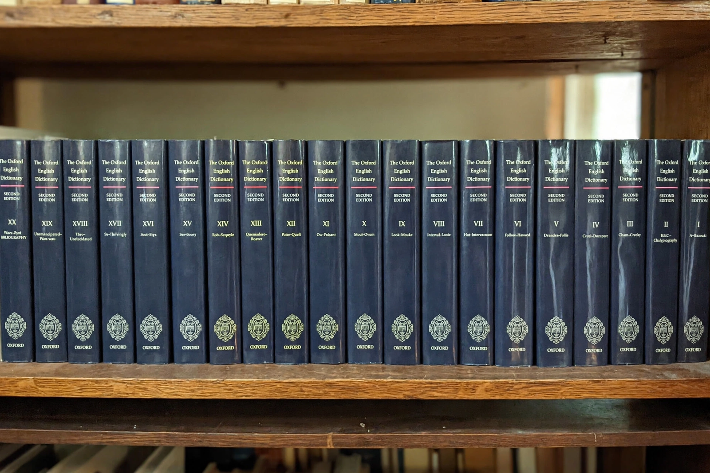

Oxford English Dictionary

Publisher: Oxford University Press
First edition: 1884–1928 (as A New English Dictionary on Historical Principles)
Chief editor (first edition): James Murray
Second edition: 1989, 20 volumes, c. 290,000 entries
Third edition: in progress, online (OED Online, from 2000)
The Oxford English Dictionary (OED), published by Oxford University Press, is the principal historical dictionary of the English language. It traces the development of more than 600,000 words over the last thousand years through some 3.5 million quotations, giving spellings, pronunciations and etymologies for each sense in chronological order. It is widely regarded as the most authoritative record of English, though it describes itself as descriptive rather than prescriptive.
History
The project began with the Philological Society in 1857, dissatisfied with existing dictionaries. After an agreement with Oxford University Press in 1879, James Murray became editor, working in a corrugated-iron "Scriptorium" in Oxford on millions of quotation slips sent in by volunteer readers — among them W. C. Minor, a prolific contributor who wrote from Broadmoor asylum. The first fascicle appeared in 1884; the complete first edition, ten volumes, was finished in 1928. The twenty-volume second edition (1989) merged the original with supplements edited by Robert Burchfield. Since 2000 the dictionary has been revised continuously online as the third edition, with quarterly updates adding new words.